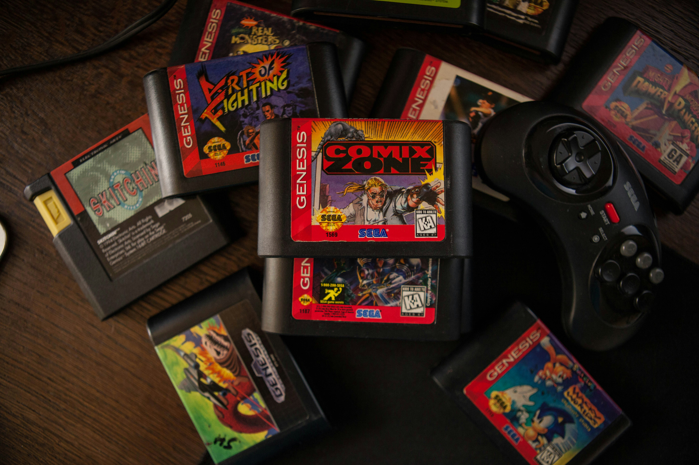

Bem-vindo ao universo Pixel & Play
Os jogos independentes (indies) e os clássicos retrô provam que grandes experiências não dependem de orçamentos bilionários, mas sim de criatividade, mecânicas marcantes e direção de arte com personalidade.
Aqui reunimos recomendações cuidadosamente selecionadas para quem deseja redescobrir pérolas das eras de 8 e 16 bits ou explorar novas obras autorais que reinventam gêneros clássicos.

O que você vai encontrar por aqui:
- Curadoria de jogos indies modernos com visual pixel art e trilhas sonoras marcantes.
- Clássicos essenciais dos anos 80 e 90 que moldaram a história dos videogames.
- Dicas de mecânicas e curiosidades sobre o desenvolvimento independente.
Pronto para começar? Explorar o Guia de Jogos